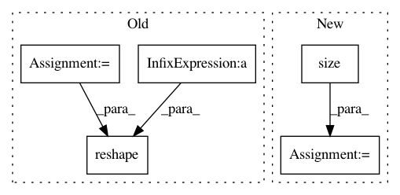

4d6aeeca8a6397fb0c2ce1aa0679155c21c6cbbb,pytorch/pytorchcv/models/isqrtcovresnet.py,Triuvec,forward,#Any#Any#,115
Before Change
@staticmethod
def forward(ctx, input):
x = input
batch_size = x.data.shape[0]
channels = x.data.shape[1]
x = x.reshape(batch_size, channels * channels)
identity = torch.ones(channels, channels).triu().reshape(channels * channels)
index = identity.nonzero()
y = torch.zeros(batch_size, channels * (channels + 1) // 2, device=x.device).type(x.dtype)
y = x[:, index]
After Change
@staticmethod
def forward(ctx, x):
batch, cols, rows = x.size()
assert (cols == rows)
n = cols
triuvec_inds = torch.ones(n, n).triu().view(n * n).nonzero()
// assert (len(triuvec_inds) == n * (n + 1) // 2)
In pattern: SUPERPATTERN
Frequency: 3
Non-data size: 5
Instances
Project Name: osmr/imgclsmob
Commit Name: 4d6aeeca8a6397fb0c2ce1aa0679155c21c6cbbb
Time: 2019-03-03
Author: osemery@gmail.com
File Name: pytorch/pytorchcv/models/isqrtcovresnet.py
Class Name: Triuvec
Method Name: forward
Project Name: onnx/onnx-tensorflow
Commit Name: a39084b995d9d6d88300632c54895488985e5cfd
Time: 2017-10-24
Author: gbercea@gheorghodorsmbp.watson.ibm.com
File Name: onnx_tf/backend.py
Class Name: TensorflowBackend
Method Name: handle_flatten
Project Name: pymc-devs/pymc3
Commit Name: 98f5d14054efbccee024155e5c1e90742327598c
Time: 2011-02-16
Author: jsalvatier@gmail.com
File Name: pymc/tests/test_gradients.py
Class Name:
Method Name: get_numeric_gradient